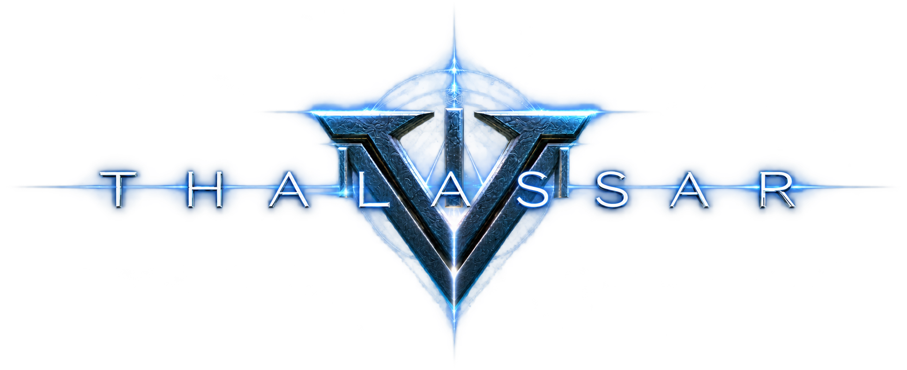

테스트 플레이 피드백 수집 동의
동의 후 피드백을 작성할 수 있습니다.
THALASSA 가상의 게임 사전예약 페이지

'가제'게임 타이틀 BI와 일러스트
소속: 아르카디아 | 능력: 자연과 생명
고대 세계수의 의지에서 태어난 신비로운 수호자. 생명의 기운을 자유롭게 다루며, 황폐해진 대지를 되살리는 힘을 지녔다. 세계의 균형이 무너질 때 모습을 드러낸다.
한마디: “생명이 존재하는 한, 희망은 사라지지 않아.”
소속: 에테르 | 능력: 시공간과 중력
멸망한 고대 문명의 마지막 실험체. 감정을 잃은 채 수천 년을 떠돌며 차원의 균열을 감시해 왔다. 세계의 진실을 알고 있지만, 그 목적은 누구도 알지 못한다.
한마디: “예측된 미래에 너의 존재는 없다.”
소속: 아르카디아 | 능력: 빛과 수정
순수한 빛과 결정체가 융합되어 탄생한 초월적 존재. 빛을 굴절시켜 환영을 만들어 내며, 수많은 수정 파편으로 적을 제압한다. 완벽한 질서를 추구한다.
한마디: “모든 거짓은 빛 앞에서 부서진다.”
소속: 에테르 | 능력: 용암과 암석
고대 전쟁에서 봉인되었던 전설의 전사. 몸속에 끓어오르는 용암의 힘을 품고 있으며, 압도적인 완력으로 모든 장애물을 파괴한다. 거친 외형과 달리 자신이 인정한 동료는 끝까지 지킨다.
한마디: “내가 지나간 자리엔 재만 남는다.”
THALASSA / CHARACTER RESERVATION
시작 지역과 수호 캐릭터를 선택해 나만의 캐릭터를 선점하세요.
STEP 01 / 기본 정보
지역과 수호 캐릭터를 선택해 주세요.
STEP 02 / 캐릭터명
10자 이내의 캐릭터명을 입력하고 중복 확인해 주세요.
중복 확인이 필요합니다.
0 / 10STEP 03 / 내용 확인
입력한 내용을 확인한 뒤 선점을 완료하세요.
시작 지역
수호 캐릭터
캐릭터명
RESERVATION COMPLETE
선점이 완료되었습니다.
시작 지역
수호 캐릭터
캐릭터명
MY RESERVATIONS
선점한 캐릭터를 확인하거나 취소할 수 있습니다.
아직 선점한 캐릭터가 없습니다.
동의 후 피드백을 작성할 수 있습니다.
1.캐릭터명 2.플레이시간 3.확인
설정한 내용을 확인했습니다. 필요하면 다시 작성할 수 있습니다.
이메일을 입력한 뒤 신청해주세요.